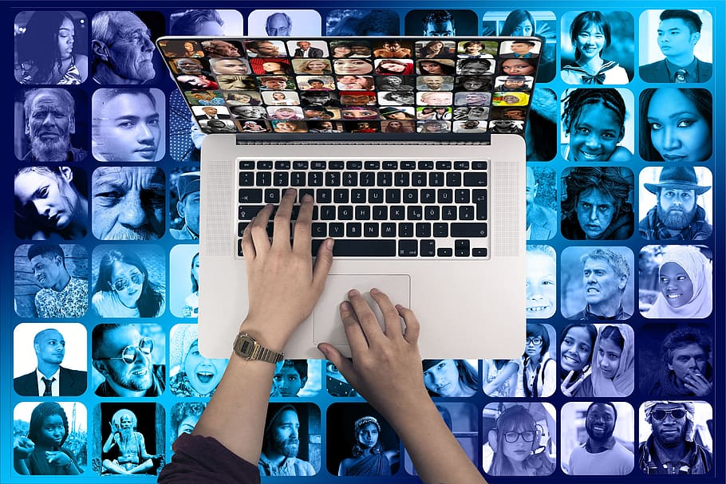

Interacción Humano Ordenador
En el mundo actual la implementación de la tecnología en la gran variedad de campos del conocimiento, acciones ordinarias, producción industrial y prácticamente la gran mayoría de interacciones que pueda tener el ser humano con su entorno a llevado a que se presenten fenómenos objeto de estudio en base a esta interacción. Inicialmente contemplamos esta relación como un puente que se va comportando de maneras diferentes dependiendo de su uso, es precisos afirmar que el avanza de la tecnología es directamente proporcional a la distancia de este puente en función a las necesidades que estén supliendo por medio de la tecnología, esta relación está s ujeta a un avance de implementación lo que quiere decir que el ser humano hará cada vez más estrecha esta relación al aplicar optimizaciones en sus acciones por medio de la tecnología representada en un ordenador o cualquier sistema que le permita hacerlo.
Martínez, C. C., Garreta, M., Hassan, Y., Martínez, L., & Mor, E. (2011). Interacción persona-ordenador. UOC.